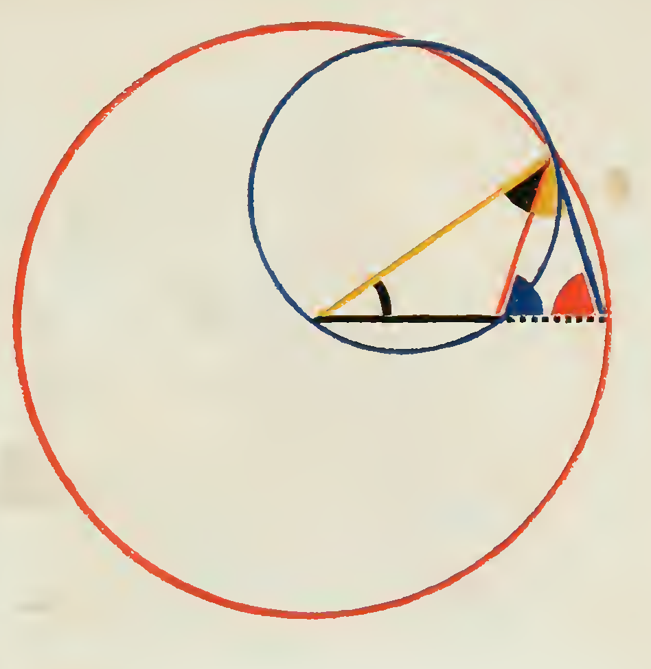

Proposition IV.10 — Isosceles Golden Triangle¶
Book IV, Proposition X. Problem (Pickering p. 135 · G.223)
To construct an isosceles triangle, in which each of the angles at the base shall be double of the vertical angle.
III.37.

Construction. Take any straight line ( + ) and divide it so that whole × = 2 ([II.11]). With the whole line as radius describe , place chord = in it ([IV.1]), draw second leg , join , and circumscribe about triangle \(ACD\) ([IV.5]).
Demonstration (:just:`III.37`, :just:`III.32`, :just:`I.32`, :just:`I.6`, :just:`I.5`).
Since whole radius × = 2 = 2, chord is tangent to ([III.37]).
∴ tangent-chord angle = alternate inscribed apex angle ([III.32]).
Adding to each and applying [I.5] + [I.32] proves = = ([I.6]),
∴ each base angle = twice the vertical angle . Q.E.F.
See Commentary on Proposition IV.10.